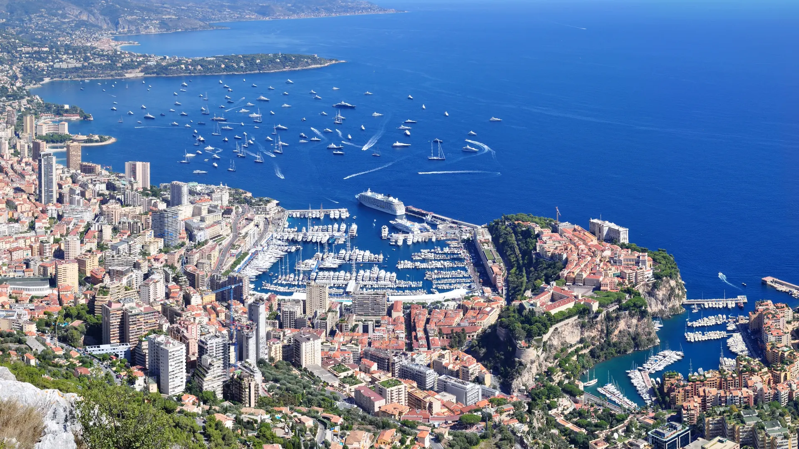
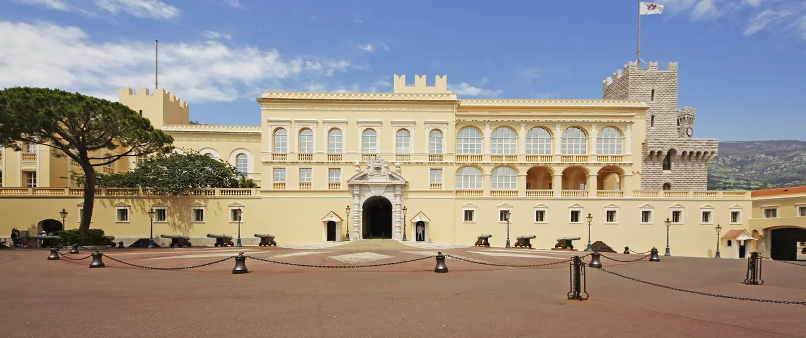
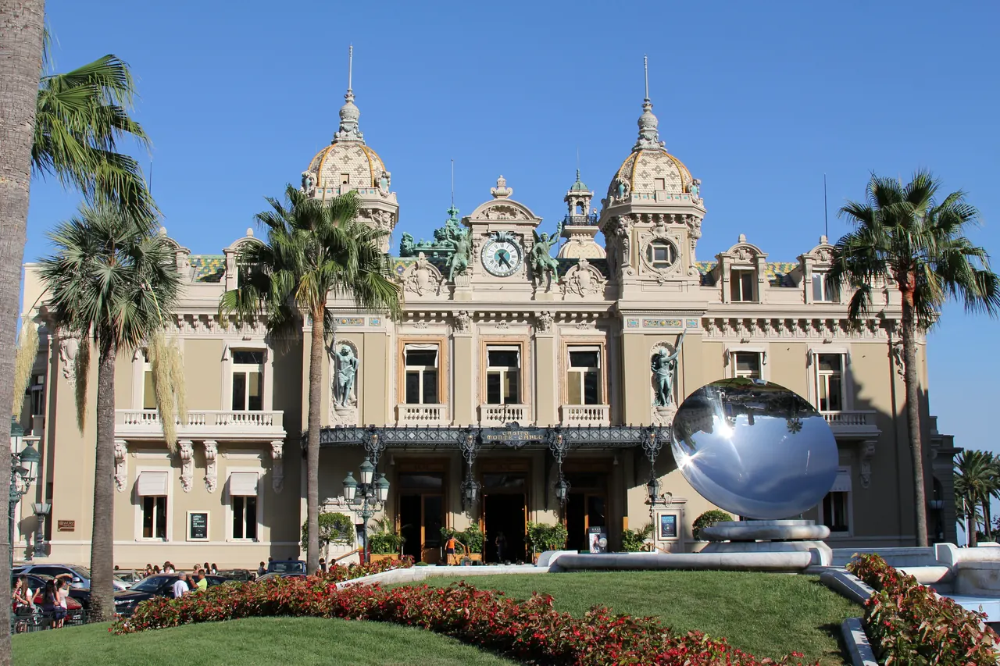

{kind=link}
{kind=link}
{kind=link}
관광·미술관
Nous avons déjà des billets.
이미 표가 있습니다.
누 자봉 데자 데 비예

면적 약 2.08㎢로 바티칸에 이어 세계에서 두 번째로 작은 도시국가다.
하지만 좁은 영토 안에 세 가지의 극적인 도시 레이어가 수직적으로 압축되어 있다. 1. 르 로셰 (Le Rocher, 왕궁 지구): 지중해로 60m 솟아오른 거대 절벽 위의 유서 깊은 대공궁과 대성당. 2. 라 콩다민 & 에르퀼 항구 (La Condamine & Port Hercule): 세계 부호들의 슈퍼 요트가 빼곡하고 매년 5월 F1 모나코 그랑프리가 열리는 지중해의 천연 항만. 3. 몬테카를로 (Monte-Carlo): 파리 오페라 가르니에를 설계한 샤를 가르니에의 카지노 데 몬테카를로(Casino de Monte-Carlo)와 최고급 호텔, 명품 숍이 밀집한 19세기 벨 에포크 자본의 상징.
니스에서 TER 기차로 20분 만에 닿는 모나코는 단순한 부자들의 피한지가 아니라, 지형의 한계를 수직 엘리베이터와 터널, 해상 매립으로 극복한 독특한 도시 공간을 경험하는 곳이다.
모나코 여행의 본질은 '많은 명소를 바쁘게 찍는 것'이 아니라, 르 로셰의 고풍스러운 왕궁 역사와 몬테카를로의 과시적 현대성을 반나절 안에서 걸으며 대비하는 데 있다. 니스에서 TER 기차로 아침에 도착해 르 로셰의 11:55 위병 교대식을 보고, 콩다민 시장에서 점심을 먹은 뒤, 에르퀼 항구를 지나 카지노 광장까지 걸어 올라가는 반나절(4~5시간) 여정이 가장 밀도 높은 경험을 선사한다.
| 운영시간 | 9월 대공궁 10:00~18:00(매표 17:00 마감), 근위병 교대식 매일 11:55 |
|---|---|
| 휴무 | 도시 자체는 연중 개방. 대공궁은 2026년 10/15까지 견학 운영, 6/4~7 F1 그랑프리 기간과 10/1~3·10/7 휴관, 9/25는 16시 조기 폐장 |
| 예약 | 입국·시내 이동에 예약 불필요. 대공궁 그랑 아파르트망만 온라인 사전 구매 가능 (성인 10유로) |
| 소요시간 | 135분 재확인 |
| 메모 | 위병 교대식 매일 11:55 (Place du Palais) |
| 항목 | 상세 정보 |
|---|---|
| 교통 접근 | Nice-Ville역에서 TER 기차 탑승 (배차 간격 약 15~30분, 소요시간 20~22분) |
| 기차역 구조 | Monaco-Monte-Carlo역은 바위산 내부 지하역사 (출구 표지판 'Sortie Port' 확인 필수) |
| 공공 엘리베이터 | 모나코 전역에 80개 이상의 무료 공공 엘리베이터/에스컬레이터가 거미줄처럼 연결되어 수평 이동 가능 |
| 통화 / 결제 | 유로화(EUR) 사용, 카드 결제 완벽 지원 |
| 추천 점심 | Café de Paris Monte-Carlo · Marché de la Condamine는 2026 리노베이션 폐쇄로 제외 |
🚆 열차 연계 팁: 모나코(오전~점심) 일정을 마친 후 Monaco-Monte-Carlo역에서 TER 기차로 10분만 더 동쪽으로 이동하면 레몬의 도시 멘통(Menton, 오후~저녁)으로 자연스럽게 연결됩니다.
1863년 샤를 3세 대공이 국가 재정 파탄을 극복하기 위해 설립한 곳이다. 건축가 샤를 가르니에(Charles Garnier)가 설계한 네오 바로크/벨 에포크 양식의 외관과 아뜨리움은 007 제임스 본드 시리즈를 비롯한 수많은 영화의 배경이 되었다.


Nous avons déjà des billets.
이미 표가 있습니다.
누 자봉 데자 데 비예
On peut prendre des photos ?
사진 찍어도 되나요?
옹 푀 프랑드르 데 포토
Où commence la visite ?
관람은 어디서 시작하나요?
우 코망스 라 비지트

국제영화제의 상징 크루아제트 대로와 호화 요트 항구, 그리고 11세기 중세 어촌의 원형 르 쉬케 언덕이 공존하는 코트다쥐르의 영화 도시.

해발 92m 바위 절벽 위에서 천사의 만(Baie des Anges)과 구시가지, 림피아 항구를 360도 파노라마로 굽어보는 니스 최고의 천연 전망 공원.

지중해 꽃과 프로방스 제철 식재료, 그리고 갓 구워낸 니스 전통 소카(Socca)를 맛보는 유서 깊은 야외 시장 광장.

지중해로 60m 솟아오른 천연 바위 절벽 위에 조성된 모나코 대공국의 역사적 심장부이자 왕궁 마을.

크루아제트의 화려함 뒤에 숨겨진 11세기 옛 어촌의 가파른 돌계단 골목과 정상 성당에서 바라보는 칸 만의 파노라마.

칸 주민들의 부엌이자 지중해 해산물, 프로방스 과일, 꽃, 치즈가 가득한 1934년 유서 깊은 철골 재래시장.